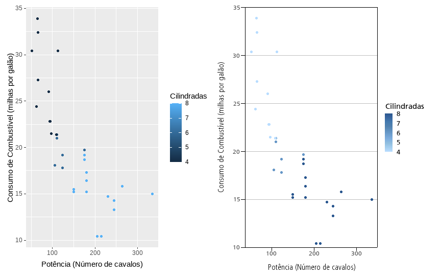

O ipeaplot é um pacote em R desenvolvido para
facilitar a padronização de gráficos e figuras seguindo a política
editorial do Instituto de Pesquisa Econômica Aplicada (Ipea). O pacote
traz algumas funções que facilitam o ajuste de formatação e de cores de
gráficos criados com o pacote ggplot2, garantindo a
conformidade com as diretrizes editoriais das publicações do Ipea.
Instalação
Você pode instalar a versão em desenvolvimento do ipeaplot direto do Github:
# Development version
utils::remove.packages('ipeaplot')
remotes::install_github("ipeadata-lab/ipeaplot")Visão geral do pacote.
O pacote ipeaplot foi desenhado para ser usado em conjunto com o pacote ggplot2, a biblioteca mais popular de visualização de dados em R. Atualmente, o ipeaplot inclui quatro funções principais para ajudar você a alterar o estilo de suas figuras de forma a seguir as diretrizes editoriais do Ipea:
-
theme_ipea()- formatação de elementos estilísticos da figura (eixos, fontes, linhas, grid, etc.); -
scale_color_ipea()escale_fill_ipea()- selecionam paleta de cores dentro de um conjunto de opções utilizadas pelo Ipea; -
save_eps()- salva a figura em formato.eps, um formato vetorial de alta resolução utilizado pela equipe do Editorial do Ipea. -
save_pdf()- salva a figura em formato.pdf, um formato vetorial de alta resolução utilizado pela equipe do Editorial do Ipea.
Fontes
Para garantir a funcionalidade ideal do pacote ipeaplot, certifique-se de que as fontes Roboto (regular) e Roboto Condensed Light estejam instaladas em seu dispositivo.
Recomendamos a seguir tutoriais para instalação de fontes em cada sistema operacional. Esses tutoriais fornecem instruções detalhadas sobre como instalar as fontes no seu dispositivo. Você pode baixar os arquivos das fontes Roboto (regular) e Roboto Condensed Light no repositório do ipeaplot.
Demonstração do pacote
Primeiro, vamos carregar as bibliotecas e uma amostra de dados que
usaremos para demonstrar o ipeaplot. Nos exemplos a
seguir, vamos utilizar os dados mtcars do R.
# Load packages
library(ipeaplot)
library(ggplot2)
library(dplyr)
library(abjData)
library(geobr)
library(patchwork)
# Load mtcars dataset
data(mtcars)No painel abaixo, à direita, temos a representação de um gráfico no formato padrão do ggplot2. Já à esquerda, destacamos o resultado obtido após a aplicação de linhas de código com as funções theme_ipea() e scale_color_ipea(). Essas funções incorporam à figura diretrizes visuais fundamentais das publicações do Ipea, proporcionando uma apresentação alinhada aos padrões estilístico estabelecidos pelo instituto. Nas próximas seções, vamos explorar como usar as funções do ipeaplot editar as figuras seguindo essas diretrizes.
fig_raw <- ggplot() +
geom_point(data = mtcars, aes(x = hp , y = mpg, color = cyl)) +
labs(y='Consumo de Combustível (milhas por galão)',
x ='Potência (Número de cavalos)',
color='Cilindradas')
fig_base <- fig_raw +
scale_color_ipea() +
theme_ipea()
Paleta de cores
Existem duas funções básicas para selecionar a paleta de cores da
figura: scale_color_ipea() e
scale_fill_ipea(). O funcionamento de ambas funções seguem
a mesma lógica e parâmetros.
O parâmetro palette permite escolher uma paleta de cores
entre as opções de paletas utilizadas pelo Editorial do Ipea. O padrão
da função é a paleta "Blue", mas o parâmetro pode receber
diversas outras opções. Isso inclui tanto paletas com cores sequenciais
("Blue", "Green", "Orange", "Pink"), quanto paletes com
cores divergentes ("Red-Blue", "Orange-Blue").
Cores sequenciais:

Cores divergentes:

Para usar as paletas de cores, basta adicionar uma das funções na
construção da sua figura com ggplot2:
# paleta sequencial verde
fig_base + scale_color_ipea(palette = "Green")
# paleta divergente de laranja a azul
fig_base + scale_color_ipea(palette = "Orange-Blue")Além de selecionar a paleta de cores, as funções
scale_color_ipea() e scale_fill_ipea() trazem
ainda outros parâmetros que permitem escolher o separador de casa
decimal (ponto ou vírgula), ajustar o tamanho da barra de legenda etc. A
lista completa de parâmetros está disponível na documentação da função
?scale_color_ipea().
Ajustando o theme das figuras
A função theme_ipea() aplica às figuras o padrão visual
de gráficos utilizados pelo Ipea em suas publicações. Ainda, a função
traz uma maneira conveniente de ajustar diversas características das
figuras, como por exemplo os eixos, posição da legenda, escalas dos
eixos etc.
Para ilustrar essa função, vamos utilizar alguns dados do Atlas do Desenvolvimento Humano organizados em um projeto de parceria entre Ipea, FJP e PNUD). Para carregar os dados, basta rodar:
Essa base de dados traz para cada municipio uma série de indicadores socioeconômicos para diferentes anos. Neste exemplo abaixo, nós primeiro calculamos qual a proporção de domicílios que possuia coleta de esgoto em cada região do país a cada anos, e em seguida geramos o gráfico:
# cria variavel identificando a regiao de cada municipio
df <- df |>
mutate(regiao = substring(uf, 1, 1),
regiao = case_when(regiao == 1 ~ 'Norte',
regiao == 2 ~ 'Nordeste',
regiao == 3 ~ 'Sudeste',
regiao == 4 ~ 'Sul',
regiao == 5 ~ 'Centro Oeste'))
# calcula media de colega de esgoto por ano e regiao
df_fig1 <- df |>
mutate(regiao = substring(uf, 1, 1)) |>
group_by(ano, regiao) |>
summarise( t_lixo = weighted.mean(x=t_lixo, w = pop)) |>
collect()
# plot
ggplot() +
geom_line(data = df_fig1, aes(x=ano, y=t_lixo, color= regiao)) +
scale_color_ipea(palette = 'Orange') +
labs(title = 'Proporção da população com coleta de lixo', color='Região') +
ylab('Proporção em %') +
xlab('Ano') +
theme_ipea()Os mesmos dados também poderiam ser visualizados com um gráfico de colunas:
graph <- ggplot() +
geom_col(data = df_fig1, aes(x=ano, y=t_lixo, fill= factor(ano))) +
scale_fill_ipea(palette = 'Green') +
labs(title = 'Proporção da população com coleta de lixo', fill='Ano') +
ylab('Proporção em %') +
xlab('Ano') +
facet_wrap(. ~ regiao) +
theme_ipea(x_breaks = 3)Mapas
As funções do ipeaplot também facilitam na criação de mapas. No exemplo abaixo, nós vamos fazer um mapa choroplético que mostra a média de anos de estudo dos municípios do Brasil.
O primeiro passo, é baixar a malha espacial de municípios. Isso pode ser feito com o pacote geobr, desenvolvido pelo Ipea. Para baixar esses dados, basta rodar:
# Load municipality and state spatial data
mun <- geobr::read_municipality(year = 2010)
uf <- geobr::read_state(year = 2010)Agora nós precisamos fazer um merge dos dados espaciais e dos dados com as estimativas de anos de estudo. A variável com os códigos do municípios é a nossa chave para unir as duas bases.
# Load municipality and state spatial data
mun = read_municipality()
uf = read_state()
# Subset and select specific columns from the 'pnud_muni' dataset
df_escola <- df |>
subset(ano == 2010) %>%
select(ano, code_muni = codmun7, e_anosestudo)
# Perform a left join between the 'mun' and 'pnud' data frames
df3 <- dplyr::left_join(mun, df_escola, by = 'code_muni')Agora basta criar o mapa:
fig_map <- ggplot() +
geom_sf(data = df3, aes(fill = e_anosestudo), color = NA) +
geom_sf(data = uf, color = "black", fill = NA) +
ggtitle("Média de anos de estudo") +
scale_fill_ipea(palette = 'Orange-Blue',
name='Anos de\nestudo') +
theme_ipea(axis_lines = 'none', include_ticks = F, axis_values = F)Salvando figura
Finalmente, o pacote ipeaplot traz as funções
save_eps() e save_pdf() para facilitar a
exportação da figura para um arquivo em formato .eps, um
formato de imagem vetorial de alta resolução.
Basta passar o objeto ggplot da figura que deseja salvar, o nome do
arquivo file.name e as dimensões da figura
width e height em centímetros: